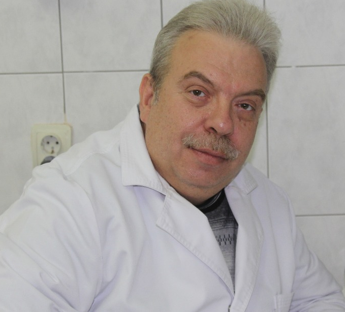

Биография
Гун Александр Аркадьевич.

Направление профессиональной деятельности:
- -съемное протезирование (частичное и полное)
- -изготовление мостовидных протезов, одиночных коронок (цельнолитые, штампованные, металлические, металлопластмасса, металлокерамика)
- -изготовление временных ортопедических конструкций( иммедиат-протезы, пластмассовые коронки)
- -протезирование на имплантатах
- -прием пациентов пожилого возраста, пациентов групп риска
- -сложное зубо-челюстное протезирование
Обучение.
- 1983 г.
-
- Окончил Московский Медико-Стоматологический Институт им.Семашко, стоматологический факультет.
- 1983-1985гг.
-
- Клиническая ординатура ММСИ на кафедре «Ортопедическая стоматология».
Дополнительное образование.
Участник семинаров:
- 1989 г.
-
- ЦОЛИУВ «Бюгельное протезирование».
- 1997 г.
-
- ММСИ «Ортопедическая стоматология».
- 1998 г.
-
- – Факультет Усовершенствования Врачей-Стоматологов
- «Полное съемное протезирование»
- «Бюгельные протезы»
- «Параллелометрия»
- 2002 г.
-
- МГМСУ «Избранные вопросы ортопедической стоматологии».
- 2007 г.
-
- – РМАПОР
- «Диагностика и планирование ортопедического лечения»
- «Имплантология»
- «Патология зубо-челюстной системы. Ортопедические методы лечения»
- 2012 г.
-
- – ГБОУ ДПО
- «Имплантология»
- «Патология зубо-челюстной системы. Ортопедические методы лечения»
- 2013 г.
-
- ГБОУ ВПО МГМСУ «Оттиски и оттискные материалы».
- «Клинические аспекты имплантологии как одного из этапов комплексной ортопедической реабилитации» Рами Балабановский (Израиль).
- 2017 г.
-
- РМАПОР
Квалификация
- 1993 г.
-
- 1-ая квалификационная категория по специальности «ортопедическая стоматология»
- 1998 г.
-
- – по наст. время Высшая квалификационная категория по специальности «ортопедическая стоматология»
Работа.
- 1985г – 2000г
-
- ГАУЗ Стоматологическая поликлиника № 22, врач-стоматолог ортопед
- 2000 г.
-
- по наст. время ГАУЗ Стоматологическая поликлиника № 22, заведующий ортопедическим отделением.
- 1988г. – 2000г.
-
- «Стоматолог-88», врач-стоматолог ортопед
- 2001г. – 2013 г.
-
- «Эвиа-Дентал», врач-стоматолог ортопед